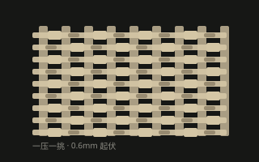
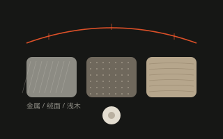
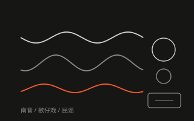

已上线
2026
LaNPs 作品集与工作台
你现在看的这一页。个人品牌站 + 工具入口，原生 HTML/CSS/JS 手写， 无框架、零运行时依赖。
- 语义化结构
- Intersection Observer
- 三端响应式
- 无障碍适配
贵阳 · 2004 年生 · 2026 届应届 · 开放多方向机会
三个网站项目，一条主线：自己设计、自己写码、自己上线。
你现在看的这一页。个人品牌站 + 工具入口，原生 HTML/CSS/JS 手写， 无框架、零运行时依赖。
面向个人与小商家的轻量工具集：AI 文案生成、图片批量压缩、报价单生成。 Vue 3 + Vite，零后端依赖。
长期拆解优秀站点的首屏，逐一重建：版式、留白、动效节奏。 比截图更有说服力的，是能点开的还原度。
五件参赛方案，共用「融·合」这个命题。不堆效果图，按作品把问题、结构和落点讲清楚。
一套能同时泡大陆功夫茶与台湾工夫茶的模块化茶具。融合不在图案上，在结构里。
 02
02
把「看烟、看孔位」改成摸得到、闻得到的流程。三个香插孔各有纹路：螺旋、疏弧、十字。

03用真实竹编逻辑做模块灯具。一压一挑留 0.6mm 起伏，同一批竹编片能拼成平铺灯、台灯罩和屏风。

04不做屏幕和 App。钥匙、眼镜、药品靠金属、浅木、绒面三种手感分区；提醒是八分钟慢慢亮起来的光。

05把三段声音压成三条能摸的波形纹。一大一小两个音孔，摸到中间，两种音色一起响。
同心茶事已有完整渲染图；其余四件目前是方案阶段，上方预览为结构示意，不是成品渲染。
不是一个岗位标签，而是一组能直接上手的能力。这些方向，我都做过对应的事。
两个已上线项目，从语义化结构写到交互与部署。Vue 3 不是纸上谈兵。
产品设计科班四年，版式、色彩、用户研究都受过训练；站点的视觉基调也是自己定的。
习惯先问「给谁用、解决什么问题」，再把需求拆成原型和页面，一路推到上线。
把 AI 接进真实流程：接口容错、超时控制、无 Key 降级，而不是停在「会用 ChatGPT」。
独立电商经营 1–3 年，选品、定价、客服、供应链都自己跑过，知道转化从哪来。
如果岗位不在这张表里，也可以聊——我的习惯是先把不会的补到能用，再谈交付。
我的组合不算常见：设计师的眼睛 + 工程师的手 + 生意人的账本。 下面是能落地的能力，以及我当前真实的熟练度。
手写语义化 HTML、CSS Grid / Flex 布局与响应式断点； 用 JavaScript 做交互与滚动动效；会 Vite 构建、Git 版本管理、Vercel 部署。
产品设计科班四年：用户研究、交互原型、视觉传达； 用 Rhino 建模、Keyshot 出渲染图、Photoshop 做后期，能从零画到成品图。
每天在用。拆需求、生成初版代码、定位 bug、批量出文案—— 不是「会用 ChatGPT」，而是把它编进真实的交付流程里。
产品设计训练让我先问「给谁用、解决什么问题」；独立电商则要自己选品、定价、客服、复盘。 能听懂需求，也能算清账。
站点不只是简历，也是我自己的开工台。三个工具已经能跑，点开就能用。
产品设计是我的专业，但它当初不是我的第一选择。 是被动进入，后来主动做好。四年下来，审美成了我最稳的一只手。
毕业回到贵阳。我不想去流水线上做重复劳动，想找一件能一直往上走的事—— 所以把设计能力往代码这边接，又用 AI 把从想法到交付的距离压短。直到今天，我还在学 Vue 3，每天学。
我不只想做前端。产品设计给我审美和需求视角，代码让我把方案落成真的， 电商副业让我对「能不能卖出去」有真实体感。
所以我开放的方向不止一个：前端开发、UI 视觉、产品助理、AI 应用、电商运营—— 只要需要「从想法到可用」的人，我都愿意认真聊。
离开贵阳去湖北读书，第一次完全独立生活。
闲鱼经营 1–3 年，代理代发模式。懂选品、懂用户、懂转化——商业嗅觉是这么练出来的。
从 HTML/CSS 起步，拆参考站的 Hero 首屏，一个一个复刻。
决定留在本地发展，作品集与工具台相继落地，把技术当主业。
前端开发 / UI 视觉 / 产品助理 / AI 应用 / 电商运营，贵阳本地或远程。
07 — 现在
前端、设计、产品、AI 应用、电商运营方向都可以聊。 简历可按方向调整，作品与细节随时发。通常当天回复。